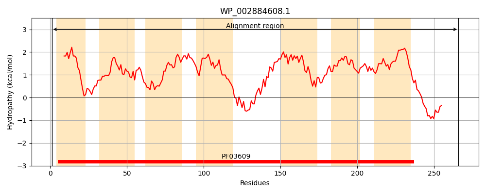
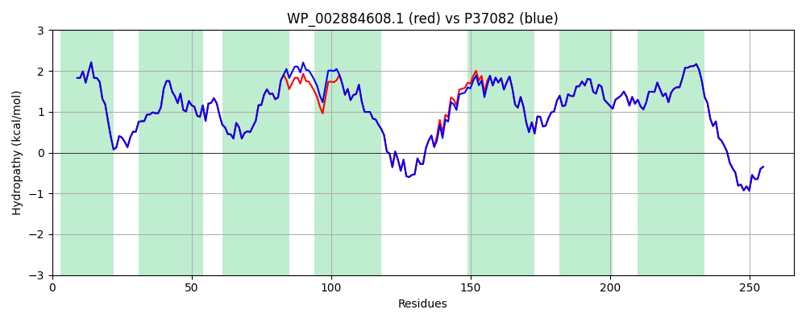

Hit Accession: P37082
Hit TCID: 4.A.6.1.3
Hit Description: gnl|BL_ORD_ID|10079 gnl|TC-DB|P37082|4.A.6.1.3 PTS system, sorbose-specific IIC component (EIIC-SOR) (Sorbose- permease IIC component) (Phosphotransferase enzyme II, C component) - Klebsiella pneumoniae.
Mach Len: 266
e:0.000000
Query TMS Count : 7
Hit TMS Count: 7
TMS-Overlap Score: 8.200000
Predicted Substrates:CHEBI:9203;sorbose
BLAST Alignment:
Score: 1290 , Bit scores: 501 bits, E-value: 0.0e+00, Alignment length: 266, Percentage identity: 99
Query: 1 MEISTLQIIAIFIFSCIAGMGSVLDEFQTHRPLIACTVIGLILGDLKTGVMLGGTLELIALGWMNVGAAQSPDSALASIISAILVIVGHQSIATGIAIALPVAAAGQVLTVFARTITVVFQHAADKAAEEARFRTIDLLHVSALGVQALRVAIPALVVSLFVSADMVSSMLSAIPEFVTRGLQIAGGFIVVVGYAMVLRMMGVKYLMPFFFLGFLAGGYLDFSLLAFGGVGVIIALIYIQLNPQWRKAEPAASTAPSAPALDQLDD 266
MEISTLQIIAIFIFSCIAGMGSVLDEFQTHRPLIACTVIGLILGDLKTGVMLGGTLELIALGWMNVGAAQSPDSALASIISAILVIVGHQSIA GIAIALPVAAAGQVLTVFARTITVVFQHAADKAAEEARFRTIDLLHVSALGVQ LRVAIPALVVSLFVSADMVSSMLSAIPEFVTRGLQIAGGFIVVVGYAMVLRMMGVKYLMPFFFLGFLAGGYLDFSLLAFGGVGVIIALIYIQLNPQWRKAEPAASTAPSAPALDQLDD
Sbjct: 1 MEISTLQIIAIFIFSCIAGMGSVLDEFQTHRPLIACTVIGLILGDLKTGVMLGGTLELIALGWMNVGAAQSPDSALASIISAILVIVGHQSIAIGIAIALPVAAAGQVLTVFARTITVVFQHAADKAAEEARFRTIDLLHVSALGVQGLRVAIPALVVSLFVSADMVSSMLSAIPEFVTRGLQIAGGFIVVVGYAMVLRMMGVKYLMPFFFLGFLAGGYLDFSLLAFGGVGVIIALIYIQLNPQWRKAEPAASTAPSAPALDQLDD 266 | Protein Hydropathy Plots: |
|---|
|  |  |
Pairwise Alignment-Hydropathy Plot:
|
|---|
|  |